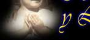
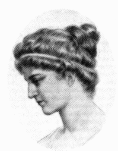

|  |   |
Hipatia de Alejandría - Egipcia |

Hipatia de Alejandría- Egipcia + 415
“Alégrense porque sus NOMBRES están escritos en los Cielos” Luc 10,20.
Alejandría era un centro intelectual y comercial en el delta del Nilo y el lugar en donde se conservó la cultura griega, una ciudad cosmopolita habitada por una población de origen griego, el grupo más importante, y por egipcios, romanos, judíos y, en menor cantidad, etnias árabes, sirias y persas. Fue durante siglos la metrópoli intelectual y cultural del mundo, una escuela, o instituto; la primera universidad en el sentido que hoy le damos, también conocida como el ¨ Museo ¨ el cual tenía como profesores a sabios de primera línea. El Museo, fundada por Tolomeo, general de Alejandro Magno, era una institución dedicada a la investigación y la enseñanza, con más de cien profesores y dos bibliotecas distribuidas así:
- una interna con 400.000 volúmenes “compuestos”, es decir, con obras de diferentes autores, y 90.000 volúmenes “simples”, con textos de un solo autor; y
- otra externa con unos 43.000 volúmenes, "simples”, con textos de un solo autor; y
- otra externa con unos 43.000 volúmenes, un zoológico, jardines botánicos, observatorio y salas de disección.

La leyenda de Hipatia de Alejandría nos muestra a una joven, virgen y bella, matemática, astrónoma y filósofa. El nombre de Hipatia significa la más grande.
El padre de Hipatia, Teón, fue también un ilustre matemático y astrónomo y el último Director del Museo quien quiso que su hija fuese un ser humano perfecto supervisando la educación de su mente y de su cuerpo, con un espíritu especialmente abierto para su época, y permitió que desarrollara sus dotes excepcionales convirtiéndose así en una gran científica. Este entrenamiento consiguió su objetivo ya que la belleza de Hipatia y su talento fueron legendarios. Se dice que fue superior a su padre, especialmente en la observación de los astros. Después de haber recibido enseñanza en filosofía y matemáticas de los profesores del Museo, Hipatia viajó por Italia y Atenas.
Enseñó Matemáticas, Astronomía y Filosofía, escribió un trabajo titulado “El Canón Astronómico” y comentó las grandes obras de la matemática griega, además construyó instrumentos científicos como el Astrolabio y el Hidroscopio. Algunos deducen que construyó el Astrolabio para medir la altitud de las Estrellas y el Hidroscopio para medir la gravedad específica de los líquidos.
Fue recordada como una gran maestra y admirada por la magnitud de sus conocimientos, era considerada como el mejor matemático vivo del mundo greco-romano, vivió durante la época del Imperio Romano en Alejandría y aunque, por su formación podríamos considerarla griega, debido a la ubicación egipcia y por la época, podría ser catalogada como romana. No se conoce cuando nació Hipatia, pero se sabe que murió asesinada en marzo del 415, cuando un grupo de cristianos exaltados, la encontraron en el centro de Alejandría, "la arrancaron de su carruaje; la dejaron totalmente desnuda; le tasajearon la piel y las carnes, y descuartizaron su cuerpo..." "Fue la última científica pagana del mundo antiguo, y su muerte coincidió con los últimos años del Imperio romano". "Ha llegado a simbolizar el fin de la ciencia antigua" Y a ella se le puede aplicar la frase de Jesús:
Resumen de las Autoras
Adela Salvador Alcaide (Universidad Politécnica de Madrid)
María Molero Aparicio (Liceo Español de París)
Según una tradición árabe, el Astrolabio lo inventó el astrónomo griego Claudio Tolomeo en el siglo II d.C. Cuentan los musulmanes que iba Tolomeo montado en un burro, absorto en la contemplación de su globo celeste (mapa del cielo en tres dimensiones). En eso dejó caer el globo por descuido y el burro lo aplastó.
El globo se convirtió en un mapa celeste en dos dimensiones. Y eso es el astrolabio: un instrumento que muestra la bóveda celeste como un disco plano. "Astrolabio" quiere decir "portador de estrellas".
Los navegantes antiguos miraban al cielo para determinar su posición, para saber qué hora era y para saber adónde dirigirse. El secreto estaba en saberse los movimientos de los astros y poder medir sus posiciones en el cielo, para lo cual era necesario medir ángulos. El astrolabio era al mismo tiempo un mapa del cielo, un compendio de conocimientos astronómicos y un instrumento para medir ángulos en el cielo.